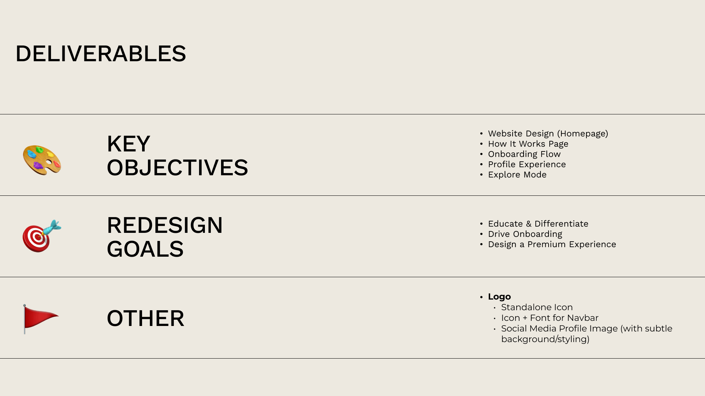
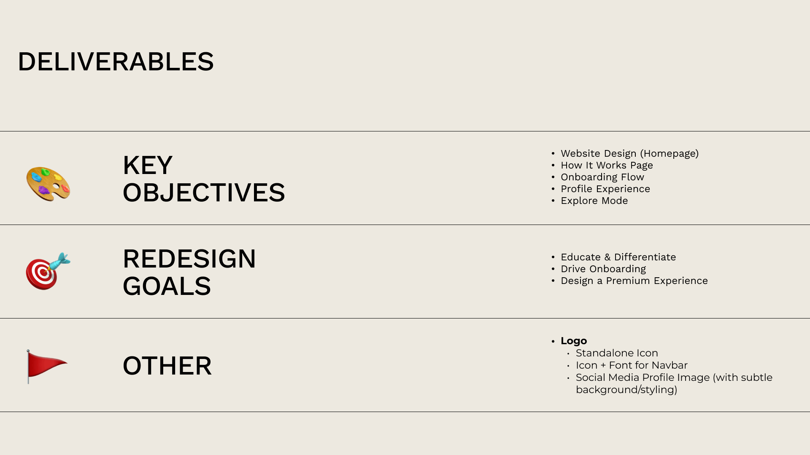

Conscious Connections
02
05
Type
UX Strategy
UI Design
Software
Figma
Adobe CC
Team
Angus Fong
Sam Park
Fenil Padhiar
Timeframe
3 Days

OVERVIEW
Introduction
Conscious Connections was a project my team and I worked on during the FLUI Hackathon 2025 - a UI/UX Design competition that pushed our limits and skills in collaboration, problem-solving, and designing under a tight deadline.
 

CHALLENGE
Conscious Connections is a platform designed for intentional, values-driven relationships. While it may seem like just another dating platform, Conscious Connections aims to prioritize compatibility, depth, and emotional intelligence. Our goal is to make the brand visually magnetic, seamlessly functional, and deeply resonant with their audience.
SOLUTION
To help bring the vision to life, we designed an experience through our web-based application that has a clear focus on creating meaningful connections through UI that feels both inviting and intentional.

RESEARCH
Problem Statement & HMW
With a challenge to design a seamless, aspirational platform that educates users, drives onboarding and encourages meaningful connections, we decided to split our How Might We statements into 3 different categories.
1. Onboarding & UX
2. Position & Brand Identity
3. Long-Term Engagement & Connection Building
This helped us stay focused on our feature brainstorming and ensure that the design decisions we made had a clear purpose.
Persona
To get a better feel for who our users are, we created 2 personas that represent different needs, motivations, and goals. This approach helped us get a better feel for the different perspectives of our users, helping us identify their pain-points and designing an experience that was intentional and resonates with our users.
Design Matrix
We created a 3-way Venn diagram that maps out our Client Goals, User Goals, and Design Goals, to understand the balance between the business objectives, user needs, and design principles. By visualizing the intersections between, we were able to make strategic, user-centered decisions to bring the vision behind Conscious Connections to life.
IDEATING
INFORMATION ARCHITECTURE
To ensure a clear structure to the website, we created a sitemap that organizes the platform’s pages, making it easier for our users to navigate and find exactly what they needed. On top of defining the layout and structure, the sitemap also helped us identify and eliminate any gaps in the user journey, creating a better flow. While the sitemap was mainly my task, Angus worked on the main user flow, defining the clear routes to enhance the usability. Throughout the project I also continuously updated our sitemap to align with the changing requirements.
Hand Sketches
With such a short time-frame for our project, my team and I used the Crazy 8s Exercise as a brainstorming technique. Creating 8 different sketches in 8 minutes, allowed us to get our ideas down quickly and explore different possibilities when creating our solution. After the exercise, we regrouped, discussed each of our ideas, and took notes to combine the strongest elements we found and refine our approach.

Low-fi Wireframing
With a client meeting the next day, we created low-fidelity wireframes to visually communicate the direction we were headed in and ensure that we were on the right track. The wireframes not only included the key pages like the home, about, and how it works pages, but also the specific pages that were initially requested by the client, such as onboarding, profile, and explore.
Client Meeting
Our client meeting played a key role in shaping our designs. The client suggested expanding the project’s scope to include mobile views and made a few adjustments to the existing branding document which we later integrated into our design process. They had also asked us to use components similar to the ShadCN Design System which influenced our component usage in the final high-fidelity design. Incorporating this feedback was definitely a challenge, but my team and I were able to push through, adapt, and implement the changes quickly and effectively.

Design
DESIGN SYSTEM & STYLE GUIDE
The ShadCN Design system acted as a source of inspiration behind our designs. We were able to incorporate certain elements of the component library to help streamline the development process if the project were to move forward. By aligning our designs with the system, we aimed to create an experience that would effectively convey the core pillars of Conscious Connections.
For the color palette, we worked with our client’s chosen colors of: Rose Red, Golden Yellow, Earthy Green, Off Black and Off White. Each color was then expanded into different shades and tints to allow for depth in UI components. improved accessibility, and scalability across various branding materials.
Our typography consisted of a Serif and Sans pairing - Cormorant Garamond and Work Sans. This classic font pairing allowed us to create contrast, hierarchy, and balance across the text sections.


Wireframing & Prototyping
To enhance our hi-fi journey, we adopted a customer-centric design approach as well as what was mentioned in our client meeting. We created new pages for an AI chatbot page, Messages, and an AI compatibility quiz page. Additionally, we made a few changes to our explore page moving away from a card-like structure. We felt that a card style layout for the users would feel impersonal and repetitive rather than creating meaningful connections. Instead, we used a layout where each user would be the sole focus of the screen, with buttons to navigate to the next profile.
While creating the flow of the web-based app, we did encounter a few gaps that required us to revisit and refine some of our ideas. Even though we had a few minor setbacks, we saw it as a good opportunity to strengthen our overall design, bringing us closer to a user-centered product.
Reflection
The FLUI Hackathon and Conscious Connections project was an exciting challenge. While having no idea of what to expect before the event, we thought on our feet and navigated changes under pressure.
Despite the difficulties, such as changes to the project’s scope and branding document, my team and I overcame these challenges by staying adaptable and having an open-minded approach. While the results weren’t exactly what my team and I had in mind, the event was an amazing learning opportunity.
Reflecting on the project, I believe there’s always room for improvement. If we had more time, I would have enjoyed exploring and enhancing the flow of a signed-in user and finding better ways to visually convey the brand’s vision and values. Overall, the project reinforced the value of effective communication, adaptability, and working under a tight deadline in creating a product that meets user needs and expectations in UX Design.